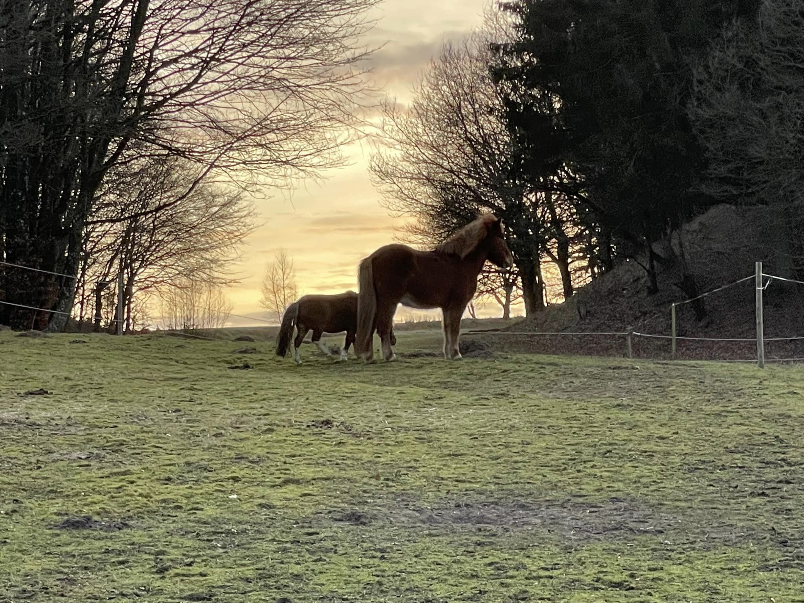
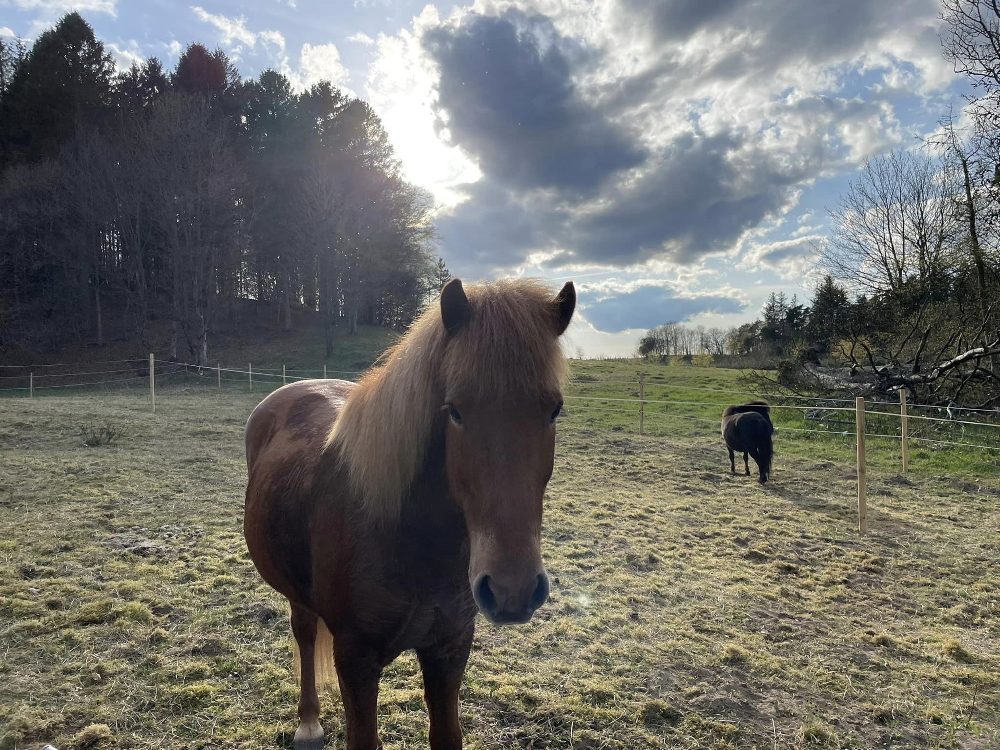

Livsglæde og selvværd
Vi lever i en meget udfordrende verden idag med megen påvirkning fra gode og mindre gode sider,
som nemt kan komme til at udfordre os så meget, at vi mister troen på vores eget værd og formåen.
Vi mister også ofte den indre ro, som ellers gør at vi har større styrke til at bevare vores selvværd.
Den kan genfindes i samarbejdet med hesten - læs mere under hvad er det hesten kan nedenfor.
Jeg hjælper via. Hesten, i helt rolige omgivelser, hvor vi kuner dig, f.eks. Som forælder, dit barn, hesten og jeg.

Hvad er det hesten kan?
Hestene er det fælles tredje og har en beroligende effekt, der
åbner op for kropsbevidsthed, nærvær og selvindsigt.
Det er et samarbejde, hvor vi finder roen, tryghed og sejrene i
samarbejdet omkring hesten. Vi arbejder med hesten fra jorden og
ved ridning, hvis det ønskes. Vi taler om hestens signaler og respons,
og herudfra lærer vi også noget om vores egne reak
tioner/adfærdsmønstre.

Hestens forståelse
Hesten har med sin rolige, afbalancerede natur en unik evne til
at sænke stressniveauet hos mennesker. Hesten er rummelig,
tålmodig og dømmer ikke, og derfor bruger jeg disse karaktertræk
til at give unge gode oplevelser, der øger livsglæde og selvværd.
Jeg hjælper via hesten , i helt rolige omgivelser, hvor vi kun er dig f.eks.som forælder,
dit barn, hesten og jeg. Vi udarbejder et mål, og en plan for vejen dertil, og så bevæger
vi os frem i det tempo, som passer ud fra de udfordringer der måtte være.
Dette forløb kan hjælpe barnet/den unge/dig med at genvinde mod, vilje og tillid til skolen, livet, verden.
Her oplever man sig selv lykkes, hvor man ikke troede man kunne.
Der kan også etableres samarbejde med evt.
Fysioterapeut/ergoterapeut/psykolog, skolelærer, hvis man er tilknyttet
en sådan, som kan bidrage med øvelser der kan laves i samarbejdet med hesten